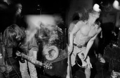
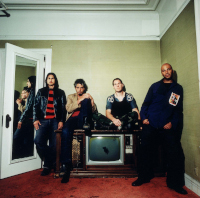
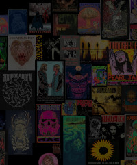
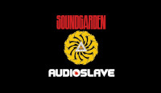
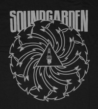

C. Cornell
Chris Cornell
1964 - 2017
b. July 20, 1964
d. May 18, 2017
from Seattle, WA
lead vocalist of Soundgarden, Audioslave and Temple of the Dog
had a near-4-octave vocal range
won two Grammys; nominated 14 times
millions
14.8
albums
8.8
digital songs
300
on-demand audio streams (U.S.)
30
records (worldwide, 2017)
more info.




